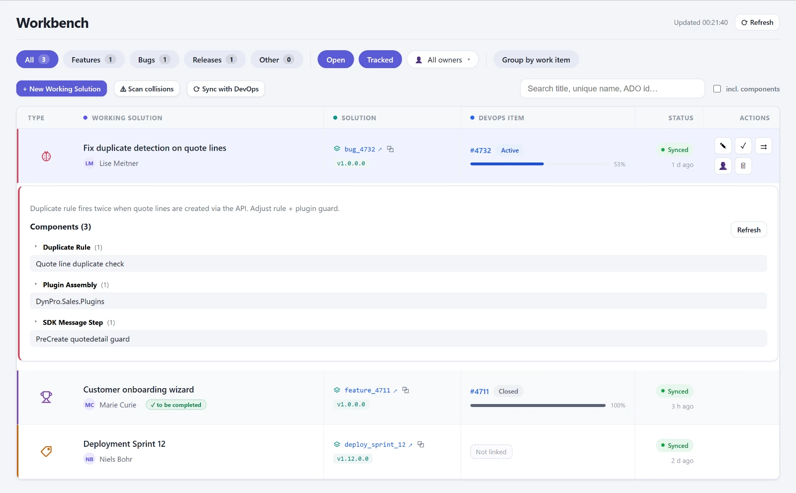
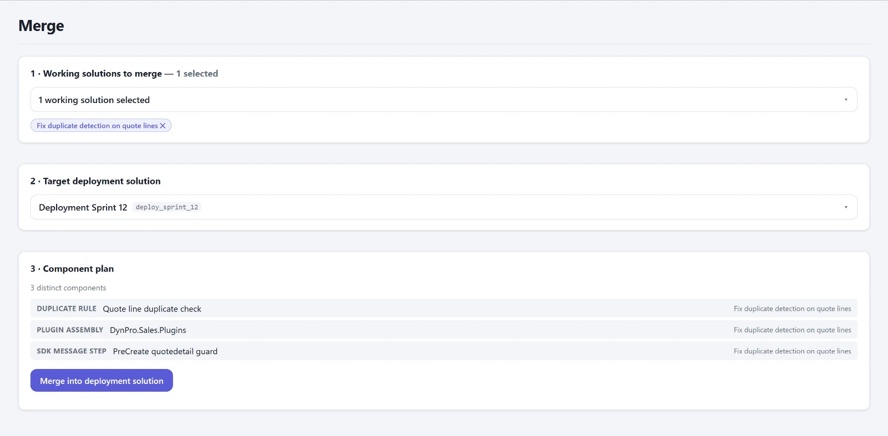
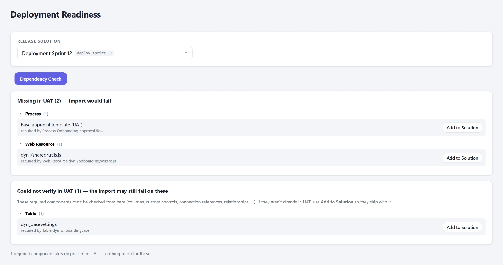
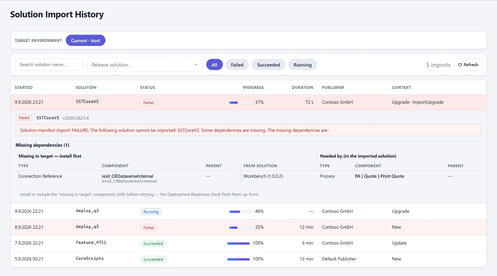
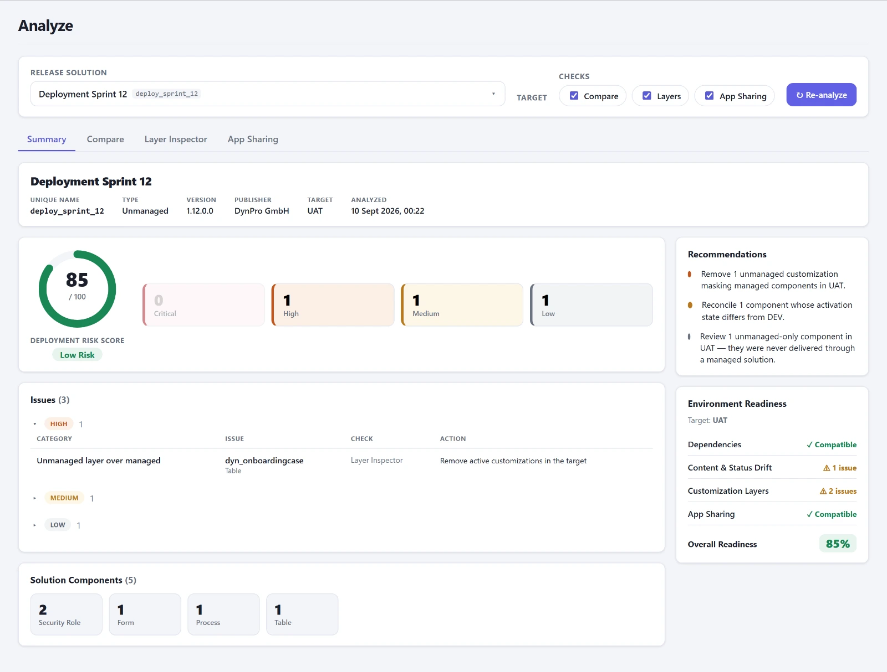
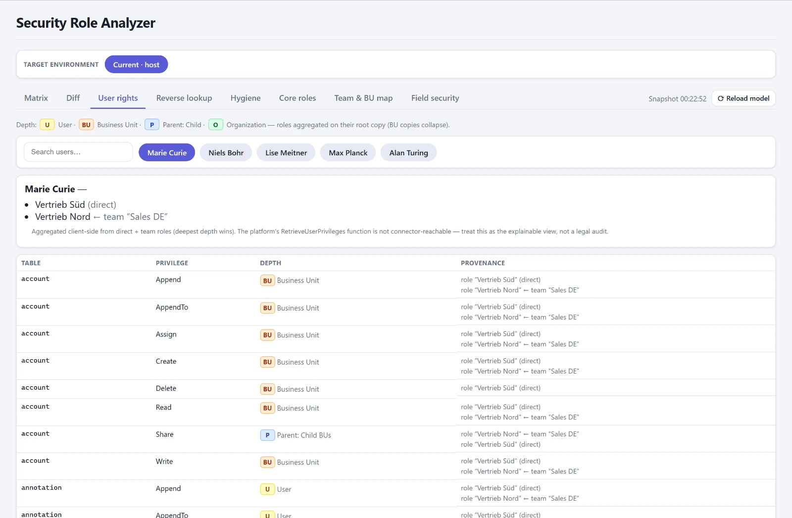
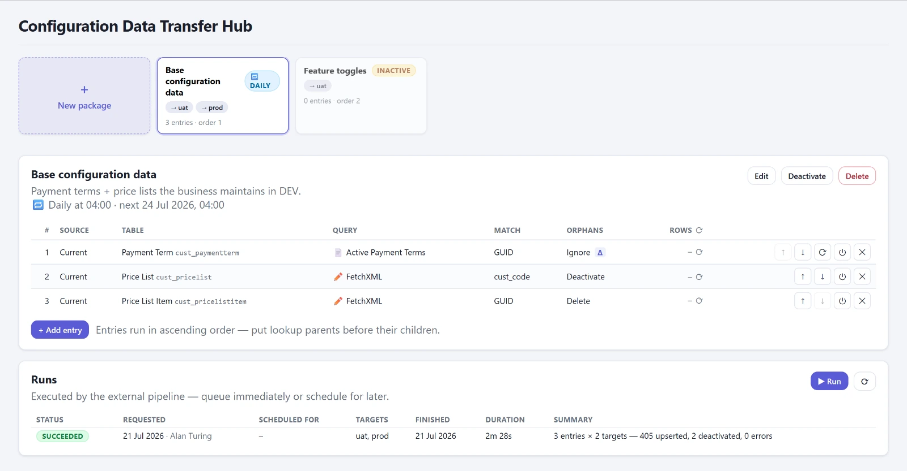

Eine Power Apps Code App für die Verwaltung von Dataverse-Solutions über den gesamten Weg: Working Solutions anlegen und verfolgen, Feature- und Bug-Solutions in einen Release mergen, den Release vor dem Import prüfen und nach dem Import kontrollieren. Dazu Konfigurations-Cockpits und Betriebsansichten, die im Admin Center entweder mühsam oder gar nicht zu bekommen sind.
Typ
Power Apps Code App, läuft im Tenant des Kunden
Technik
React, TypeScript, Vite, Fluent UI v9
Daten
Dataverse Web API und Microsoft-Dataverse-Konnektor
Umfang
21 Arbeitsbereiche in vier Gruppen
Auf dieser Seite
Wofür
In gewachsenen Umgebungen ist selten strittig, was deployt werden soll. Strittig ist, was dabei schiefgeht: eine Abhängigkeit, die im Ziel fehlt. Eine Environment Variable ohne Wert. Eine Connection Reference, die nirgends gebunden ist. Ein unmanaged Layer, der künftige Deployments stillschweigend maskiert. Eine Canvas App, die zwar ankommt, aber niemanden erreicht, weil Freigaben nicht mittransportiert werden. Eine Sicherheitsrolle, die von Hand nachgebaut statt transportiert wurde und ab morgen still auseinanderläuft.
Jede dieser Fragen ist einzeln beantwortbar, mit genug Zeit und den richtigen Abfragen. Die Konsole beantwortet sie an einer Stelle, über alle konfigurierten Umgebungen hinweg, und zwar bevor importiert wird. Sie ersetzt keine Pipeline. Sie sagt Ihnen, ob der nächste Import durchgeht und was er im Ziel anrichtet.
Die Abbildungen auf dieser Seite zeigen die App mit den eingebauten Beispieldaten, nicht mit Kundendaten.
Alles dreht sich um die Working Solution: ein Datensatz mit Titel, Typ, Azure-DevOps-ID, Owner und Deployment-Status, verbunden mit der echten unmanaged Dataverse-Solution, die die Komponenten trägt. Beim Anlegen entsteht beides in einem Schritt. Unmanaged Solutions ohne Datensatz bleiben trotzdem sichtbar und werden über die Namenskonvention eingeordnet.
Manage
Der tägliche Weg von der einzelnen Änderung bis zum fertig geschnürten Release.
Workbench
Liste aller Working Solutions mit Filter nach Feature, Bug und Deployment sowie Suche über Titel, Unique Name und Azure-DevOps-ID. Der Schalter incl. components durchsucht zusätzlich die Anzeigenamen der Komponenten in den offenen Solutions und beantwortet damit die Frage, welche Solution eine bestimmte Tabelle oder einen bestimmten Flow enthält. Anlegen erzeugt Datensatz und echte Solution zusammen, mit Live-Vorschau des Unique Name und Dublettenprüfung.
Detail inline unter der Zeile
Komponenten nach Typ gruppiert
Owner zuweisen
Deep-Link ins Maker-Portal
Löschen mit drei Sekunden Undo

Workbench mit aufgeklappter Zeile: Beschreibung, Komponenten nach Typ und der Abgleich mit dem Azure-DevOps-Work-Item.
Kollisions-Radar
Lädt die Komponenten aller offenen Working Solutions und markiert jede Komponente, die in mehr als einer davon steckt. Genau dort überschreibt derjenige, der zuletzt deployt, die Arbeit des anderen. Betroffene Solutions bekommen einen Warnhinweis, die Detailansicht nennt die geteilten Komponenten und die Gegenseite.
Beschränkt auf den offenen Satz
Nennt die konkurrierende Solution
Azure-DevOps-Abgleich
Ein Cloud Flow synchronisiert den Status der verknüpften Work Items zurück in die Working Solutions. Steht ein Work Item auf Closed oder Done, während die Solution noch offen ist, markiert die Liste den Eintrag als to be completed und hebt die Abschluss-Aktion hervor. Das Kennzeichen wird abgeleitet, nicht gespeichert, und rechnet nach jeder Synchronisation neu.
Work-Item-Link je Eintrag
Abschließen und Wiedereröffnen
Merge
Deployment-Solution als Ziel wählen, Feature- und Bug-Solutions ankreuzen, den Komponentenplan prüfen und zusammenführen. Konflikte sind markiert, Duplikate werden übersprungen. Jeder Lauf schreibt eine Historienzeile mit Anzahl, Quell-Solutions und den hinzugefügten Komponenten, die im Detail des Release als Merge-Historie erscheint.
Komponentenplan vor dem Lauf
Quell-Solutions werden automatisch gestempelt

Merge in drei Schritten: Quell-Solutions wählen, Ziel-Release wählen, Komponentenplan prüfen.
Merge Rules Deployment Manager
Je Release lässt sich festlegen, welche Komponententypen überhaupt mitwandern dürfen: eine Positivliste und eine Ausschlussliste. Mergebar ist ein Typ, wenn er in der Positivliste steht oder diese leer ist, und nicht in der Ausschlussliste. Blockierte Komponenten erscheinen im Plan ausgegraut und werden beim Lauf gesondert gezählt.
Pro Release konfigurierbar
In der Workbench nur lesend sichtbar
Release Notes
Werden aus der Merge-Historie erzeugt: enthaltene Quell-Solutions samt Azure-DevOps-Link und alle hinzugefügten Komponenten nach Typ. Umschaltbar zwischen Markdown und Rohtext. Veröffentlichen friert den Stand als versionierten Snapshot ein. Ab dem zweiten Mal ist der Entwurf inkrementell und listet nur, was seit der letzten Veröffentlichung dazugekommen ist.
Ansehen und Kopieren für alle
Veröffentlichen für Deployment Manager
Verlauf aller Stände
Timeline
Was ging wann wohin. Für einen gewählten Release stehen Merge-Läufe, veröffentlichte Release Notes und die Importe je konfigurierter Umgebung auf einem gemeinsamen Zeitstrahl, neueste zuerst, mit Statusfarbe je Umgebung. Filter je Ereignisart. Eine Umgebung, die gerade nicht lesbar ist, erzeugt einen Hinweis statt die Ansicht zu blockieren.
Reine Visualisierung vorhandener Daten
Validate
Prüfungen vor dem Import und Kontrollen danach. Diese Gruppe setzt durchgehend die Deployment-Manager-Rolle voraus.
Deployment Readiness Deployment Manager
Prüft eine Release-Solution gegen die Zielumgebungen auf Komponenten, die dort gebraucht, aber weder mitgeliefert noch vorhanden sind. Genau daran scheitert ein Import. Je Fund gibt es Add to Solution, um die fehlende Komponente direkt aufzunehmen. Typen, die über den Namen gematcht werden, gelten als vorhanden, wenn das Ziel sie unter gleichem Namen kennt.
Vor dem Import
Fehlende Komponente direkt aufnehmen

Getrennt ausgewiesen: was im Ziel fehlt und den Import scheitern lässt, und was sich von hier aus nicht prüfen lässt.
Import History Deployment Manager
Die Import-Historie einer wählbaren Umgebung mit Start, Solution, Status, Fortschritt, Dauer und aufgelöstem Publisher. Beim Aufklappen wird das Import-Log geparst: das Manifest-Ergebnis und, als eigentlicher Kern, die Missing-Dependency-Fehler als präzise Tabelle. Links die im Ziel fehlende Komponente samt übergeordnetem Objekt und Herkunfts-Solution, rechts die importierte Komponente, die sie braucht.
Schweres Log erst beim Aufklappen
Serverseitige Suche nach Status und Solution

Ein fehlgeschlagener Import, aufgeklappt: links die im Ziel fehlende Komponente, rechts die, die sie braucht.
Analyze Deployment Manager
Ein Klick auf Run Analysis lässt Abhängigkeiten, Vergleich, Layer und App-Freigaben in einem Durchlauf gegen die Zielumgebung laufen und verdichtet das Ergebnis zu einem Deployment Risk Score von 0 bis 100, Karten nach Schweregrad, einer Tabelle der wichtigsten Befunde, einer Komponentenübersicht nach Typ, abgeleiteten Empfehlungen und einer Readiness-Matrix je Bereich. Die drei fokussierten Einzelprüfungen sind als Tabs enthalten und teilen sich die einmal oben gewählte Release-Solution.

Ein Durchlauf, verdichtet zu Risk Score, Befunden nach Schweregrad, Empfehlungen und Readiness-Matrix.
Compare
Cloud Flows, Workflows, Business Rules, Plugin-Steps und Scripts über alle Umgebungen, gruppiert nach Typ. Markiert und filterbar sind fehlende Komponenten und Status-Drift, etwa ein Flow, der in PROD als Entwurf liegt. Das Änderungsdatum zählt bewusst nicht als Drift-Signal, weil jeder Solution-Import es überschreibt.
Layer Inspector
Prüft alle Komponenten gegen die Layer-Stacks im Ziel. Findet unmanaged Layer über managed Komponenten, also direkte Customizings, die künftige Deployments maskieren, außerdem unmanaged-only und schlicht fehlende Komponenten. Je Fund ein Absprung auf die Layer-Seite im Maker-Portal der Zielumgebung.
App Sharing
Canvas Apps und Custom Pages daraufhin prüfen, mit wem sie je Umgebung geteilt sind. Ein Solution-Import überträgt keine Freigaben, eine deployte App erreicht also niemanden, bis sie im Ziel geteilt wird. Bei Custom Pages ist das anders, sie hängen an den Rollen der modellgetriebenen App.
Env Config Deployment Manager
Environment Variables und Connection References über alle konfigurierten Umgebungen nebeneinander, gematcht über den import-stabilen Namen. Aufgezeigt werden die drei typischen Deploy-Lücken: kein Wert und kein Default in einer Umgebung, eine ungebundene Connection Reference und ein Setting, das in einer Umgebung existiert und in der anderen fehlt. Secrets bleiben maskiert.
Filter auf eine Release-Solution
Zahl nutzender Cloud Flows je Referenz
Getrennt nach aktiv und inaktiv
Deep-Link in Power Automate
Audit Config Deployment Manager
Die Audit-Konfiguration einer wählbaren Umgebung: der Hauptschalter der Organisation mitsamt Aufbewahrungsdauer und darunter die Einstellung je Tabelle und je Spalte. Eine Tabelle auditiert nur dann wirklich, wenn beides eingeschaltet ist, deshalb wird der Fall konfiguriert, aber aus gesondert markiert. Ebenso der Fall, dass eine auditierte Tabelle keine einzige markierte Spalte hat und damit nur eine leere Hülle protokolliert.
Spalten laden beim Aufklappen
Lesend
Dual-Write Maps Deployment Manager
Die Table Maps einer wählbaren Umgebung, nach Namen gruppiert, mit Zähler über die gespeicherten Versionen. Gezeigt wird nicht die höchste Nummer, sondern die tatsächlich laufende Version aus der Runtime-Konfiguration, sonst die zuletzt gespeicherte, und das offen gekennzeichnet. Liegt eine neuere Version über der laufenden, weist die Zeile sie als nicht in Betrieb aus. Der Menüpunkt erscheint nur, wenn Dual-Write in der Umgebung installiert ist.
Quell- und Zieltabelle mit Richtung
Feld-Mapping im Overlay
Marker für unmanaged Layer
User Settings Deployment Manager
Ein Inventar der persönlichen Einstellungen aller aktiven Benutzer je Umgebung: Zeitzone, Währung, Oberflächensprache und Formate. Der Detaildialog zeigt eine Live-Vorschau der Formatfelder. Deployment Manager können die Werte ändern und speichern, mit Bestätigungsschritt und einer deutlich strengeren Rückfrage in PROD.
Vergleich über Umgebungen
Einstellungen auf mehrere Benutzer ausrollen
Process Comparer Deployment Manager
Alle Prozessarten einer Release-Solution, also Cloud Flows, klassische Workflows, Business Rules, Actions und Business Process Flows, als Statusmatrix über die Umgebungen. Abweichende Zellen sind hervorgehoben. Je Zelle stehen Owner, das Ein- und Ausschalten und ein Deep-Link. Im Definitions-Modus wird gegen einen konfigurierten Soll-Zustand geprüft, dann zählt auch die Host-Umgebung mit.
Gruppierung nach Typ oder Bereich
Sammelaktionen über Zeilenauswahl
Lauf überlebt den Tab-Wechsel
Plugin Comparer Deployment Manager
Dasselbe Prinzip für die Plugin-Steps einer Release-Solution, ergänzt um die Assembly-Version je Umgebung. Damit wird sichtbar, ob ein Step zwar existiert, aber gegen eine ältere Assembly läuft. Aktivieren und Deaktivieren geht je Zelle, mit Bestätigung und verschärfter Rückfrage in PROD.
Assembly-Version je Umgebung
Enable und Disable je Zelle
Role Comparer Deployment Manager
Beantwortet die Frage, ob die Sicherheitsrollen heil angekommen sind. Standardmäßig zählen nur die eigenen Rollen, die rund 250 mitgelieferten bleiben ausgeblendet, und der Vergleich lässt sich auf eine Release-Solution einengen. Gematcht wird über den Namen, nicht über die ID, denn eine Rollen-GUID überlebt nur einen sauberen Solution-Transport. Gleicher Name bei abweichender ID bedeutet: von Hand nachgebaut statt transportiert. Das sieht heute richtig aus, driftet ab morgen still und wird von keinem Import je aktualisiert. Genau dafür gibt es das Kennzeichen rebuilt.
Je Zelle stehen die Zahl der Privilegien, der managed-Zustand und wie viele Privilegien diese Umgebung anders vergibt als die Referenz. Eine Umgebung, die nicht gelesen werden konnte, zeigt ein Fragezeichen und fließt in keinen Befund ein, gilt also nie als unauffällig. Der Bereich ist mit Absicht lesend: eine driftende Rolle gehört transportiert. Sie im Ziel zu bearbeiten erzeugt genau den unmanaged Layer, den der Layer Inspector danach meldet.
Drilldown
Je Rolle jede Tabelle und Aktion, die sie irgendwo gewährt, mit der Tiefe je Umgebung von Benutzer bis Organisation, wahlweise nur die Unterschiede. Darunter die übrigen Privilegien.
Baseline einfrieren
Der aktuelle Stand lässt sich als benannter Snapshot einfrieren. Danach wechselt die Frage von „stimmen die Umgebungen überein“ zu „was hat sich seit dem Einfrieren geändert“, und jede Umgebung wird gegen ihr eigenes früheres Ich geprüft.
Security-Konzept
Aus einem Snapshot entsteht ein fertiges Dokument mit Umgebungsübersicht und Privilegienmatrix. Mit einem zweiten Snapshot steht davor ein Änderungskapitel mit jedem verschobenen Privileg. Export als Markdown oder Text.
Operate
Der laufende Betrieb: was das System gerade tut, was in der Datenbank steht, wer was darf und wie Konfigurationsdaten zwischen Umgebungen wandern.
Plugin Traces
Ein Stream über die Plugin-Trace-Logs, der alle 15 Sekunden nachlädt und pausiert, sobald der Browser-Tab in den Hintergrund geht. Gefiltert wird serverseitig nach Zeitfenster, Typ, Message, Tabelle, synchron oder asynchron und wahlweise nur auf Ausnahmen. Der schwere Meldungsblock wird erst beim Aufklappen einer Zeile geladen, nie im Stream selbst.
Correlation-Timeline nach Aufrufstiefe
Laufzeit-Aggregate je Plugin und Message
Trace-Level umschaltbar
Role Analyzer Deployment Manager
Arbeitet auf einem zwischengespeicherten Abbild des Sicherheitsmodells. Enthalten sind die Matrix aus Rolle, Tabelle und Privileg mit Tiefenangabe, der Vergleich zweier Rollen, die effektiven Rechte eines Benutzers samt Herkunftspfad aus direkten und über Teams vererbten Rollen, die umgekehrte Suche nach allen, die eine bestimmte Aktion ausführen dürfen, sowie Hygiene-Befunde wie nicht zugewiesene Rollen.
Org-Chart der Business Units und Teams
Field Security auf Spaltenebene
Core Roles bündeln mehrfach vergebene Privilegien

Effektive Rechte eines Benutzers, je Privileg mit Tiefe und Herkunft aus direkten und über Teams vererbten Rollen.
OData Browser Deployment Manager
Freies Durchsehen der Datenbank je Umgebung über die Dataverse Web API. Tabelle wählen, Spalten per Auswahl setzen, dabei sind nicht selektierbare Spalten ausgegraut samt Begründung und Lookups werden automatisch richtig aufgelöst. Der Filter-Builder bietet nur typrichtige Operatoren an, Choice-Werte erscheinen als Label statt als Zahl. Die Abfragezeile ist editierbar und bidirektional an den Builder gekoppelt: Was der Builder nicht abbilden kann, bleibt wörtlich stehen und wird als erweiterter Filter gekennzeichnet, statt umgeschrieben zu werden.
Ein Klick auf eine Zeile öffnet den vollständigen Datensatz, ohne Spaltenauswahl, weil das Panel zeigen soll, was wirklich gespeichert ist. Lookups sind dort überall klickbar und führen mit Rückweg zum Zielsatz, ein eigener Reiter listet die abhängigen Tabellen und springt vorgefiltert hinein. Ein zweiter Modus fährt FetchXML direkt, und die Metadaten-Sets stehen im Tabellenpicker, um das Schema selbst zu durchsuchen.
Eingabehilfe mit Vervollständigung
Prüf-Hinweise, die warnen statt zu blockieren
Mehrfachsortierung und Zählung
Historie und gespeicherte Abfragen je Umgebung
Export als CSV oder JSON
Lesend
Data Transfer Deployment Manager
Der Configuration Data Transfer Hub bringt Konfigurationsdaten zwischen Umgebungen. Ein Paket besteht aus Zielumgebungen und einer Reihenfolge, ein Eintrag aus Quellumgebung, Tabelle, Filter und Spalten, wahlweise über eine System-Ansicht oder direkt als FetchXML mit Vorschau und Zeilenzähler. Dazu kommt das Record-Matching, entweder über die GUID oder über bis zu fünf fachliche Spalten, sowie die Frage, was mit Zielzeilen geschieht, die die Quelle nicht mehr liefert.
Ausgeführt wird nie in der Sitzung der App, sondern von mitinstallierten Cloud Flows. Der Abschnitt Write plan zeigt vorab je Spalte, was der Executor damit tun wird: kopieren, als Referenz binden oder mit Begründung überspringen. Er nennt auch die unangenehmen Fälle, etwa Referenzen, die verworfen werden, oder Lookups auf Tabellen, die das Paket gar nicht oder erst später transportiert. Ein leerer Plan blockiert das Speichern.
Probelauf, der zählt und protokolliert, aber nichts schreibt
Sofort starten oder terminieren
Wiederkehrende Zeitpläne
Delta-Transfer je Zielumgebung
Ergebnis-Log füllt sich während der Ausführung
Zeilenlimit wird gemeldet statt teilweise geschrieben

Ein Transfer-Paket mit seinen Einträgen und dem Ergebnis des letzten Laufs je Zielumgebung.
Reference
Einrichtung und die Handvoll Adressen, die man ständig braucht.
Environment Setup
Ein geführtes Erst-Setup für eine neue Umgebung. Startet die App ohne Konfiguration, schiebt sich der Assistent blockierend davor und legt die nötigen Datensätze an. Er bietet die über den Konnektor erreichbaren Umgebungen zur Auswahl, füllt die Kennung der aktuellen Umgebung selbst aus und schlägt Publisher und Deployment-Manager-Rolle vor. Speichern ist wiederholbar, ohne Duplikate zu erzeugen, und dieselbe Ansicht dient später zum Nachpflegen.
Pflicht sind nur Umgebungen, Publisher und Rolle
Lädt die Konfiguration ohne Neuladen nach
Links
Eine Matrix der ständig gebrauchten Adressen: eine Zeile je Linkart, eine Spalte je Umgebung. Enthalten sind System-App, Web API, Diagnose, die klassischen Einstellungsseiten, Maker-Portal und Power Automate sowie die Admin-Seiten, dazu ein globaler Block mit Admin Center, Kapazität, Release Planner und Service Health. Alles allein aus der Umgebungskonfiguration abgeleitet, ohne eigenen Datenzugriff.
Kopierknopf je Zeile
Für alle Anwender offen
Quer durch die App
Was überall gilt, unabhängig vom Arbeitsbereich.
Berechtigungen
Die App kennt zwei Stufen. Offen für alle Anwender sind Workbench, Merge, Release Notes im Lesen, Timeline, Plugin Traces und die Linksammlung. Alles Weitere setzt eine konfigurierbare Sicherheitsrolle voraus, die direkt am Benutzer hängen muss. Gesperrte Menüpunkte bleiben sichtbar, sind aber ausgegraut und als solche gekennzeichnet.
Schreibende Aktionen laufen als angemeldeter Benutzer, nicht als technischer Dienst. Wo eine Aktion die Produktivumgebung trifft, ist die Rückfrage bewusst deutlich strenger als sonst.
Umgebungen
Die App wird in einer Umgebung installiert und liest von dort aus in die anderen hinein. Lesende Zugriffe über Umgebungsgrenzen laufen über den Microsoft-Dataverse-Konnektor, schreibende Zugriffe treffen technisch nur die eigene Umgebung. Ist eine fremde Umgebung ausgewählt, sind schreibende Aktionen deshalb abgeschaltet und als solche erklärt.
Eine Umgebung, die gerade nicht lesbar ist, führt nirgends zu einem Abbruch. Sie erscheint als offener Hinweis und wird in keinem Befund als unauffällig gewertet.
Oberfläche
Aufgebaut wie eine Dynamics-365-App: dunkle Kopfleiste mit Markenzeichen links und Statusanzeige rechts, darunter eine durchgehende Seitenleiste. Die Navigation ist in vier Gruppen geteilt, von denen immer genau eine offen ist, weil 21 Einträge sonst nicht auf einen Notebook-Bildschirm passen. Welche offen ist, folgt automatisch dem aktiven Arbeitsbereich.
In der Kopfleiste sitzen zwei Hilfen: eine Einführung für neue Kolleginnen und Kollegen, die den Weg von der Solution bis zum Merge erklärt, und eine Referenz, die den gerade geöffneten Bereich beschreibt.
Bauweise
Die Oberfläche hängt an einer Service-Schnittstelle, nicht direkt an Dataverse. Dadurch läuft die App auch ohne Verbindung mit Beispieldaten, was Demos und Entwicklung ohne Tenant möglich macht. Die Kopfleiste zeigt jederzeit, in welchem der beiden Modi sie gerade läuft.
Auswertende Logik liegt in reinen Funktionen mit Tests, getrennt vom Datenzugriff. Teure Ansichten werden erst bei Bedarf nachgeladen, schwere Inhalte wie Import-Logs oder Trace-Meldungen erst beim Aufklappen der jeweiligen Zeile.
Interesse an der Konsole oder an einem System-Review?
Die Suite wird derzeit zum Produkt für den DACH-Markt ausgebaut. Wenn Sie sie im eigenen Tenant sehen wollen oder erst einmal wissen möchten, was in Ihrer Umgebung eigentlich los ist, schreiben Sie mir kurz.